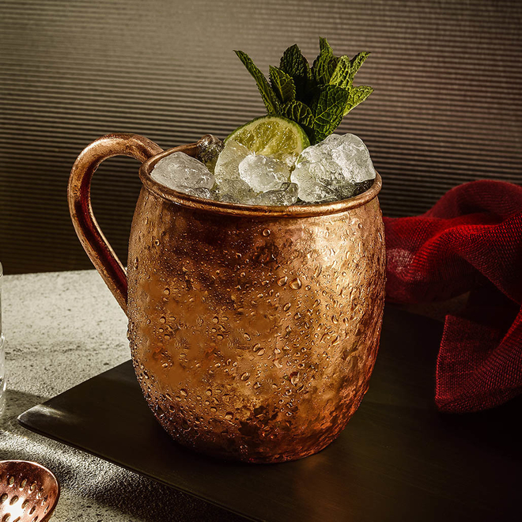

The Moscow Mule

Description
A classic drink classically served in a copper mug. I classically serve it in a spare coffee mug because everything else is sitting in the sink.
Things you'll need
- 1 cup (traditionally a copper cup but any cup works)
- 1 handful of crushed ice or ice cubes (optional)
Ingredients
- 1.5oz vodka
- 0.5oz lime juice
- 0.5 cup ginger beer
- 1 lime wedge (optional)
Steps
- Pour the vodka, lime juice, and ginger beer into the cup
- Optionally add your crushed ice or ice cubes
- Stir until the cup is frosted or cold, unless you didn't have any ice (or chose not to, you weirdo)
- Optionally garnish with the lime wedge